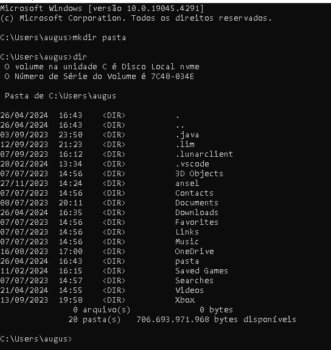

é um aplicativo de linha de comando para sistemas operacionais Windows. Ele fornece uma interface de texto simples através da qual os usuários podem interagir com o sistema operacional e executar uma variedade de tarefas, como gerenciamento de arquivos, execução de programas, configuração de redes e muito mais.
Algumas utilizações: Scripts e Automação, Acesso a Recursos do Sistema, Navegação de Diretórios e Manipulação de Arquivos, esses são só alguns exemplos do que é possivel fazer com o prompt de comando (CMD)
